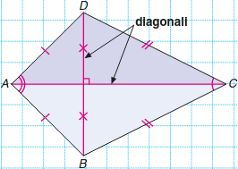
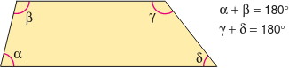

Quadrilateri
Continuando lo studio dei poligoni, dopo i triangoli, consideriamo le figure con quattro lati e quattro angoli. Tali figure vengono chiamate quadrilateri, raramente quadrangoli, e per tale motivo costituiscono un’eccezione all’interno dei poligoni in quanto normalmente si fa riferimento al numero di angoli: triangolo, pentagono, poligono... Solo nel caso delle figure con quattro angoli, il nome evidenzia i lati e non gli angoli: quadrilateri, cioè figure con quattro lati.
Definizione. ll quadrilatero è un poligono limitato da una spezzata chiusa formata da quattro segmenti. È un poligono di quattro lati. □
La somma degli angoli interni è di 360°.
Un quadrilatero è detto:
ciclico se i vertici appartengono ad una sola circonferenza;
deltoide se i lati sono congruenti a coppie di lati consecutivi;
trapezio se ha una coppia di lati paralleli;
- parallelogramma se presenta i lati a due a due paralleli;
rombo se ha i lati congruenti;
rettangolo se gli angoli interni sono tutti retti;
quadrato se ha tutti i lati congrueni e gli angoli nterni sono tutti retti.
Un parallelogramma è un caso particolare di trapezio, un rettangolo è anche un parallelogramma e un quadrilatero ciclico, il quadrato è un caso particolare di rombo e di rettangolo.
Caratteristica dei quadrilateri, oltre a quella di avere quattro lati e quattro angoli, è quella di avere quattro vertici e due diagonali. I vertici che non appartengono allo stesso lato si dicono opposti e il segmento che li unisce prende il nome di diagonale.
Here are some special types of quadrilaterals. A quadrilateral is called a
trapezoid if it has at least one pair of parallel sides;
parallelogram if it has two different pairs of parallel sides;
rhombus if all four of its sides are congruent;
rectangle if it has four right angles;
square if all four sides are congruent and all four angles are right angles.
I deltoidi
Definizione. Il deltoide è un quadrilatero che ha due coppie di lati consecutivi uguali. □
Il deltoide è forse uno dei primi quadrilateri conosciuti dai bambini, perché la sua forma è utilizzata comunemente nella costruzione degli aquiloni. Caratteristica è anche la forma del deltoide concavo che prende talvolta il nome di “punta di lancia”.
I trapezi
I trapezi sono quadrilateri con due lati paralleli. I lati paralleli, sono disuguali e prendono il nome di base maggiore e base minore del trapezio, a seconda della loro lunghezza, mentre gli altri due lati si chiamano lati obliqui. La distanza tra le rette parallele cui appartengono le due basi si chiama altezza del trapezio e si ottiene conducendo da un qualsiasi punto della retta cui appartiene una delle basi il segmento di perpendicolare alla retta cui appartiene l’altra base.
Trapezio isoscele
I lati obliqui caratterizzano i vari tipi di trapezio. Se i lati obliqui sono congruenti, il trapezio si dice isoscele. In un trapezio isoscele gli angoli adiacenti a ciascuna base sono uguali. Puoi verificarlo anche tu con il rapportatore.